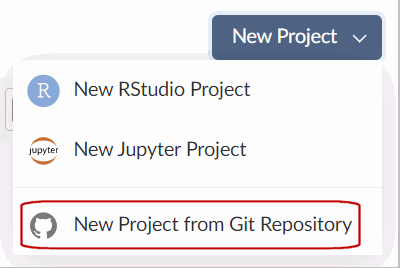
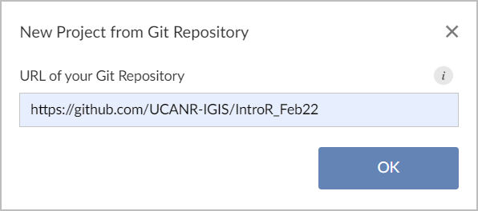
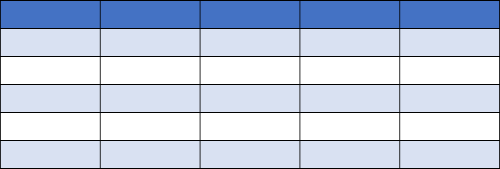

February 25, 2022
R as a fancy calculator:
(pi * 5 ^ 2) / sqrt(4 / 3) Saving results as objects:
my_volume = (4 / 3) * pi * (1.5 ^ 3)Type your commands at the Console or in scripts
Functions
Vectors
Indexing refers to pulling out one or more elements using square brackets.
my_object[ some_indices ]
Example 1:
Example 2:
In addition to indices (i.e., integers), you can put Logical (TRUE/FALSE) values in the square brackets
Indexing with indices can also be use to reorder elements
These same methods will work to subset rows from data frames!
Packages are what R calls addons. Most packages provide additional functions and/or datasets.
Three simple steps to use the functions in a package:
Figure out which package you need
Install (i.e., download) it (just once)

Example:
library(dplyr)
Piping syntax is an alternative way of writing arguments into functions. It helps when you are using several functions in one expression:
Consider the expression:
sum(sd(log(runif(100))))
Piping is an alternative way of writing functions that uses the pipe operator %>% or |> to ‘feed’ the result of one function into the next function:
fun_a() %>% fun_b() %>% fun_c() %>% …
Piping allows the results of one function to be passed as the first argument of the next function. Hence a series of commands to be written like a sentence.
fun_a(x, ...) %>% fun_b(x, ...) %>% fun_c(x, ...) %>% ...
│ ￪ │ ￪
└───────────┘ └───────────┘
So the following are equivalent:
RStudio keyboard shortcut for pipe operator:
ctrl + shift + m
Configure the shortcut under Global Options >> Code
%>% (default)
|> (‘native’ pipe introduced R4.0)
Exercise 3 Topics
library()

GitHub URL: https://github.com/ucanr-igis/IntroR_Feb22When you import (or export) data, you’ll have to enter a path to a file.
Paths can be complete or relative to the working directory.
Complete path:
Example of a relative path:
Windows users: Beware the slashes!
The following will not work beause of the slashes:
Back slashes must be converted to one of the following:
C:/noworm/trials/data
C:\\noworm\\trials\\data
When using relative paths, the first '.' represents the working directory.
Even though you don’t see it, there is always working directory. You can view the current working directory with:
Changing the working directory is easy!
or use RStudio:
RStudio Projects
RStudio Projects are always based on a folder (look for the .Rproj file).
When you open a RStudio project, the working directory is set the project folder.
RStudio Import Dataset Wizard
Organize up your R projects in folders (directories).
Put your data and output files in subdirectories.
Create an RStudio Project in the project folder.
Use relative paths in your import and export functions.

R has two data classes that organize data in rows and columns:
rows
aka:
- record
- case
- feature (spatial)
columns
aka: variable, field
## Sepal.Length Sepal.Width Petal.Length Petal.Width Species
## 1 5.1 3.5 1.4 0.2 setosa
## 2 4.9 3.0 1.4 0.2 setosa
## 3 4.7 3.2 1.3 0.2 setosa
## 4 4.6 3.1 1.5 0.2 setosa
## 5 5.0 3.6 1.4 0.2 setosa
## 6 5.4 3.9 1.7 0.4 setosa
Key concepts
To get an individual column, use $
## Girth Height Volume
## 1 8.3 70 10.3
## 2 8.6 65 10.3
## 3 8.8 63 10.2
## 4 10.5 72 16.4
## 5 10.7 81 18.8
## 6 10.8 83 19.7## [1] 70 65 63 72 81 83 66 75 80 75 79 76 76 69 75 74 85 86 71 64 78 80 74 72 77
## [26] 81 82 80 80 80 87## Min. 1st Qu. Median Mean 3rd Qu. Max.
## 63 72 76 76 80 87
You can add a column to a data frame using the $ notation. Write an expression that:
References a new column with the $ operator as though it existed
Assigns the new column values
R will create the column on the fly and add it to the data frame
Example:
You can subsample rows and columns from a data frame together with square bracket notation:
Where rows-expression is a vector of integers of Logicals (TRUE/FALSE) of the row numbers you want.
## Girth Height Volume select_me
## 5 10.7 81 18.8 TRUE
## 6 10.8 83 19.7 TRUE
## 7 11.0 66 15.6 TRUE
## 8 11.0 75 18.2 TRUE
## 9 11.1 80 22.6 TRUE
## 10 11.2 75 19.9 FALSE## Girth Height Volume select_me
## 5 10.7 81 18.8 TRUE
## 6 10.8 83 19.7 TRUE
## 17 12.9 85 33.8 FALSE
## 18 13.3 86 27.4 FALSE
## 26 17.3 81 55.4 TRUE
## 27 17.5 82 55.7 FALSE
## 31 20.6 87 77.0 TRUEEven if you’re subsetting just rows or just columns, you still need the comma in the square brackets!
Whatever is needed to get your data frame accepted by the function(s) you want to use for analysis and visualization.
Data wrangling often includes one or more:
dplyrAn alternative (usually better) way to wrangle data frames than base R.
Part of the tidyverse.
Good way to familiarize yourself with it: explore the cheat sheet.
dplyr functions| subset rows | filter(), slice() |
| order rows | arrange() |
| pick column(s) | select(), pull() |
| add new columns | mutate() |
| join data frames | left_join(), right_join(), inner_join() |
Exercise 4 Topics
The most common class for storing tabular data in R is the data frame
View the first few rows of a data frame with head()
View an entire data frame with View()
Grab an individual column with $
Grab specific rows and columns with my_df[rows-expression, cols-expression]